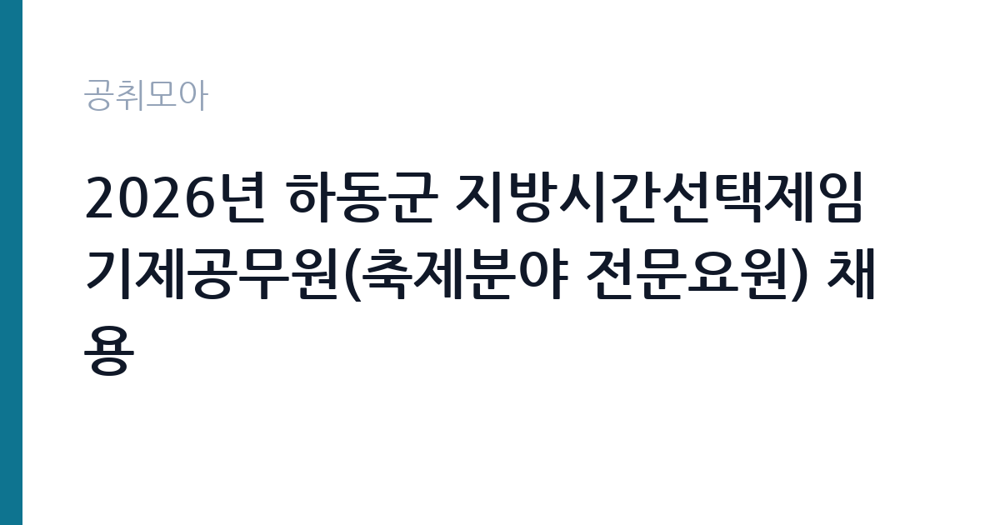

[지자체] 2026년 하동군 지방시간선택제임기제공무원(축제분야 전문요원) 채용
경상남도 하동군 · 경남 · 마감 2026-11-13 (D-12) · 출처 나라일터

한눈에 보는 모집 조건
| 기관 | 경상남도 하동군 |
|---|---|
| 공고명 | 2026년 하동군 지방시간선택제임기제공무원(축제분야 전문요원) 채용 |
| 고용형태 | 임기제 |
| 근무지 | 경남 |
| 게시일 | 2026-11-02 |
| 마감일 | 2026-11-13 (D-12) |
지원자격, 이렇게 읽으세요
- 지방시간선택제임기제"라"급 1명
- 접수 ~2026-11-13 마감
- 세부 조건은 원문 공고문 확인
응시자격은 세 갈래 가운데 하나를 충족하면 됩니다. 학사학위 취득 후 임용예정 직무분야 실무경력 3년 이상, 5년 이상 실무경력, 또는 7급 이상 공무원으로 2년 이상 실무경력입니다. 임용예정 직무분야는 국가·지방자치단체, 공공기관, 법인·단체, 기업체에서 축제 기획 및 운영 관련 업무에 종사한 경력입니다. 여기에 함정이 두 가지 있습니다. 경력증명서에 근무기간과 담당업무, 직위가 구체적으로 명시되어야 하고, 전임근무가 아니면 주당 근무시간이 적혀 있어야 합니다. 또 지방공무원 임용령 제17조 제5항에 따라 최종경력을 기준으로 공고일 현재 퇴직 후 10년이 지난 경력은 인정되지 않습니다.
이 공고의 포인트
첫 번째 포인트는 연봉입니다. 공고문에 나급(6급 상당)의 연봉 상한액 7,578만원, 하한액 5,049만원이 표로 명시되어 있고, 연봉 외 급여는 지방공무원 수당 규정에 따라 별도로 지급됩니다. 두 번째는 근무 조건입니다. 주 35시간 시간선택제로 임기가 2년이고, 업무실적과 사업 필요성에 따라 총 5년 범위 안에서 연장계약이 가능합니다. 세 번째는 직무입니다. 하동군의 관광축제 종합계획을 세우고 축제별 정체성과 콘텐츠를 다시 정하며, 유사·중복 프로그램을 조정하는 일이 중심입니다. 단순 행사 진행이 아니라 기획과 재편 업무입니다.
전형은 어떻게 진행되나
1차는 형식요건 심사 방식의 서류전형입니다. 제출서류로 직무수행에 관련된 자격과 경력의 적합 여부를 심사하고, 응시인원이 임용예정인원의 8배수 이상이면 7배수 이상으로 합격자를 제한할 수 있습니다. 2차는 면접시험으로 인성, 공직관, 전문성 등 업무추진 역량을 종합 평가합니다. 해당 분야에 적격자가 없으면 채용하지 않을 수 있다고 명시되어 있습니다. 응시인원이 선발예정인원과 같거나 적으면 1회 이상 재공고 후 시험을 실시하고, 응시자가 1명이면 공고를 7일 이상 연장합니다.
이런 분께 추천해요
- 축제 기획·운영 실무경력 5년 이상인 분. 경력 기준 가운데 가장 직접적인 경로입니다.
- 학사학위 취득 후 축제 관련 실무경력 3년 이상인 분. 학위와 경력을 함께 갖춘 경우 적용됩니다.
- 7급 이상 공무원으로 축제·관광 분야에서 2년 이상 근무한 분. 공직 경력 경로입니다.
지원 전 체크리스트
- 경력증명서에 근무기간·담당업무·직위가 모두 적혀 있는가. 빠지면 경력으로 인정되지 않습니다.
- 비전임 경력이라면 주당 근무시간이 증명서에 명시되어 있는가. 시간이 불분명한 프리랜서 경력은 보수내역까지 요구됩니다.
- 최종경력이 퇴직 후 10년 이내인가. 임용령 제17조 제5항이 적용됩니다.
- 응시수수료 7,000원과 하동군 수입증지를 준비했는가. 정부 수입인지는 사용할 수 없습니다.
모집 일정과 제출 타이밍
응시원서 교부와 접수는 2026년 11월 2일 월요일부터 11월 13일 금요일까지입니다. 접수 시간은 오후 6시까지이고 점심시간 12시부터 1시까지는 받지 않습니다. 접수처는 하동군청 본관 2층 행정과 인사담당자이고 방문접수만 가능합니다. 공고문에 적힌 시험 일정은 1차 서류전형 합격자 발표가 11월 18일 수요일, 2차 면접시험이 11월 25일 수요일, 최종합격자 발표가 12월 4일 금요일입니다. 응시수수료는 7,000원이며 하동군청 민원과에서 발행하는 하동군 수입증지를 사용합니다.
직무 이해하기: 지자체
이 직위는 하동군 농산물 유통과에 배치됩니다. 부서 이름은 유통과지만 실제 업무는 관광축제입니다. 하동은 섬진강과 야생차, 이병주 문학 등 지역 자원을 활용한 축제를 여러 개 운영해 왔고, 공고문은 축제별 정체성과 콘텐츠, 개최 시기를 다시 정립하는 일을 첫 번째 업무로 제시합니다. 구체적으로는 축제 종합계획 수립, 유사·중복 프로그램 조정, 대표 콘텐츠 발굴, 지역 협력체계 구축입니다. 축제가 몰리는 시기를 분산하고 예산을 효율화하는 작업이 실무의 핵심이며, 지역 상인과 문화단체, 관광객을 모두 상대해야 합니다.
자기소개서 작성 팁
이 공고의 서류전형은 형식요건 심사이므로 자기소개서는 면접과 직무수행계획서를 뒷받침하는 자료입니다. 특히 직무수행계획서를 A4 5매 이내로 요구한다는 점을 기억하십시오. 첫 문단에서는 축제 기획 경력을 기간과 규모로 제시하십시오. 관람객 수나 예산 규모, 참여 단체 수 같은 숫자를 붙이면 설득력이 생깁니다. 두 번째 문단에서는 하동의 축제를 진단하는 내용을 넣으십시오. 축제 수가 많고 시기가 겹친다는 문제를 언급하고 해결 방향을 제시하면 직무 이해도가 드러납니다. 세 번째로는 지역 협력체계를 만든 경험을 구체적으로 쓰십시오.
면접 준비 포인트
면접은 인성, 공직관, 전문성 등 업무추진 역량을 종합 평가합니다. 질문은 세 갈래로 예상됩니다. 첫째 축제 기획 실무입니다. 예산과 인력이 부족할 때 무엇을 먼저 조정했는지, 관람객이 줄어든 축제를 어떻게 살렸는지를 묻습니다. 둘째 지역 이해입니다. 하동의 축제 가운데 하나를 골라 개선안을 제시하라고 요구할 수 있습니다. 셋째 공직관입니다. 지자체 축제에서 예산 집행과 협력업체 선정의 투명성을 어떻게 지킬지 확인합니다. 답변은 결론, 근거, 사례 순으로 정리하십시오.
급여·근무조건 읽는 법
이 공고는 보수가 명확히 공개되어 있습니다. 공고문 보수수준 표에 나급(6급 상당)의 연봉 상한액 7,578만원, 하한액 5,049만원이 제시되어 있고, 여기에 지방공무원 수당 등에 관한 규정에 따라 연봉 외 급여가 별도로 지급됩니다. 다만 주 35시간 시간선택제이므로 전일제 기준 연봉액을 그대로 받는 것이 아니라 근무시간 비율에 따라 조정될 가능성을 확인해야 합니다. 연봉 책정 방식과 시간선택제 적용 기준은 원문 공고문의 보수 조항과 하동군 행정과에 확인하는 것이 정확합니다. 계약 기간은 2년이고 실적에 따라 총 5년까지 연장될 수 있습니다.
자주 묻는 질문
- 주 35시간인데 연봉은 어떻게 계산되나요?
공고문에는 나급 연봉 상한액 7,578만원과 하한액 5,049만원이 제시되어 있습니다. 다만 시간선택제 근무라 근무시간 비율에 따른 조정 여부를 원문과 담당 부서에 확인해야 정확합니다. - 축제 관련 경력이 아니어도 지원할 수 있나요?
임용예정 직무분야 경력이 요건입니다. 국가·지자체, 공공기관, 법인·단체, 기업체에서 축제 기획 및 운영 업무에 종사한 경력이 인정됩니다. - 접수는 온라인으로도 가능한가요?
방문접수만 가능합니다. 접수처는 하동군청 본관 2층 행정과이며, 접수기간은 2026년 11월 2일부터 11월 13일까지입니다.
함께 보면 좋은 공고
[지자체] 서대문구 시간선택제임기제공무원(공공디자인 분야) 채용 공고 — 마감 2026-11-18[지자체] 거제시 보건소장(개방형직위) 임용시험 시행계획 재공고 — 마감 2026-11-13[지자체] 2026년 상록수보건소장(개방형직위) 임용시험 시행계획 2차 재공고 — 마감 2026-11-16출처: 나라일터 공개정보를 바탕으로 공취모아가 정리한 안내글입니다. 모집 조건·일정은 변경될 수 있으니 지원 전 반드시 원문 공고문을 확인하세요. 본 글은 정보 제공용이며 합격을 보장하지 않습니다.